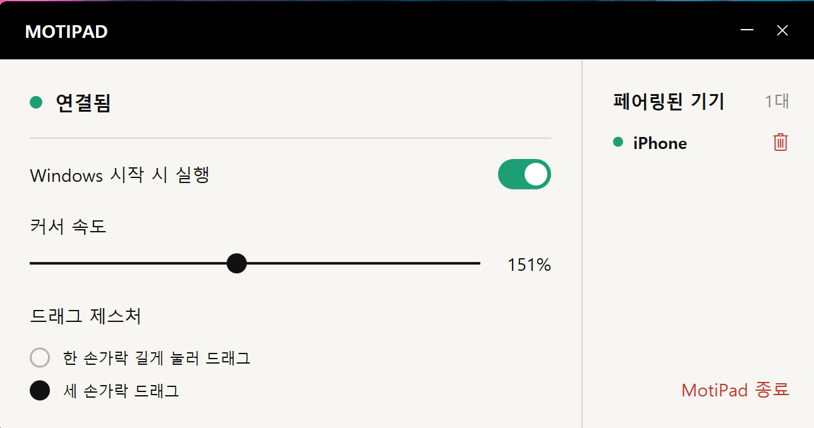

공간 절약
마우스를 움직일 곳이 없어도,
손가락은 움직일 수 있어요.
마우스를 오갈 공간을 따로 확보할 필요가 없습니다. 휴대폰 화면에서 손가락을 움직여 컴퓨터 커서를 조작하세요.
공간은 적게, 짐은 하나 줄이고.
익숙한 제스처를 iPhone에서 그대로.

카페의 작은 테이블, 임시 작업 공간, 짐을 줄이고 싶은 날. 늘 가지고 다니는 iPhone에 터치패드도 함께 담으세요.
마우스를 오갈 공간을 따로 확보할 필요가 없습니다. 휴대폰 화면에서 손가락을 움직여 컴퓨터 커서를 조작하세요.
마우스나 터치패드를 따로 챙기기 싫을 때, 늘 가지고 다니는 iPhone에 역할 하나를 더하세요.
커서 이동, 탭, 두 손가락 스크롤.
간결한 터치 영역으로 작업에 집중하세요.
큰 화면 반대편으로 파일을 옮기다가 휴대폰 가장자리에 닿았나요? 손가락을 잠시 뗀 뒤 다시 올려 계속 드래그하세요.
자주 쓰는 컴퓨터를 페어링하고 휴대폰 메뉴에서 제어할 컴퓨터를 고르세요. 작업 장소가 바뀌어도 계속 사용할 수 있습니다.
자주 쓰는 컴퓨터를 페어링 목록에 추가하세요.
메뉴에서 제어할 컴퓨터를 전환하세요.
컴퓨터 한 대씩 제어합니다.
MotiPad를 열어 휴대폰 화면으로 커서를 움직이고 스크롤하고 드래그하세요.
수신 프로그램을 설치하고 같은 로컬 네트워크에서 페어링하세요. 커서 속도와 드래그 제스처는 컴퓨터에서 조절할 수 있습니다.
공식 App Store 및 Windows 수신 프로그램 다운로드 링크를 이곳에 안내합니다.